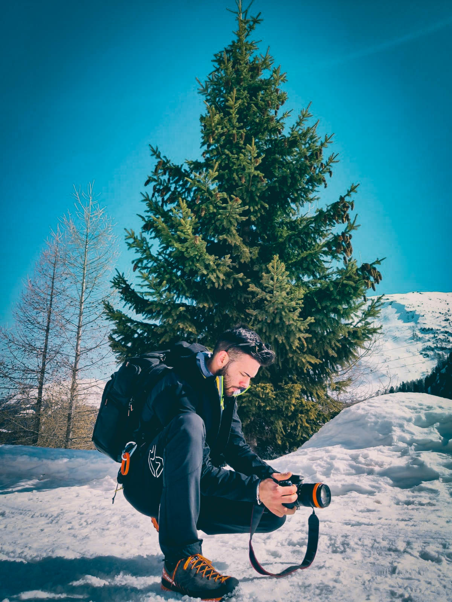

Ingegnere
Fotografo
Designer
ABOUT ME
Ciao, sono Mattia e sono un ingegnere dell'automazione.
Vivo a Bormio, paesino immerso nelle montagne della Lombardia, ma studio al Politecnico di Milano.
Odio i compiti noiosi, per questo cerco sempre di risolverli nella maniera più automatica possibile, ma sempre al meglio.

ISTRUZIONE
Dopo il diploma di istituto tecnico in elettronica, nel 2017 inizio gli studi al Politecnico di Milano.
Nel 2020 conseguo la laurea di 1° livello in Ingegneria dell'Automazione
Ora sto proseguendo gli studi di 2° livello in Automation and Control Engineering, sempre al PoliMi
ESPERIENZE LAVORATIVE
Durante gli studi (dal 2014 al 2016) ho avuto l'opportunità di svolgere diversi stage presso aziende del settore tra cui Baxter-BiEffe Medital e Levissima.
Durante i mesi estivi del 2015 e 2016 ho potuto lavorare al fianco del Automation Supervisor di Baxter BiEffe Medital a Grosotto (SO).
Dal "Revamping" di macchine al completo rinnovamento del sistema di trattamento e distribuzione dell'acqua nello stabilimento.
